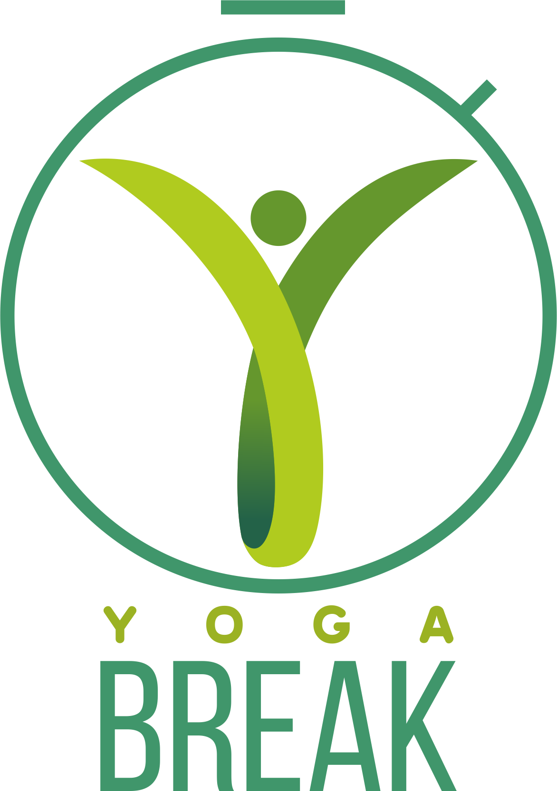

 Yoga Break
Feeling drained, stressed or a little out of focus at the workplace? Here is a way to re-charge yourself.
Presenting “Y Break”, or the “Yoga Break at Workplace” program. A thoughtfully designed Yoga protocol from the Ministry of AYUSH to connect you to your breath.
Y Break protocol will help you to de-stress, refresh and re-focus, all during a quick break from work. The 5 minutes time frame with selected Yoga practices is designed to bring the well known rewards of Yoga to you if pursued daily, regularly over a long period.
Y Break Protocol works wonders at the workplace by making it easier to focus on work and increasing the productivity of individuals.
To assess Y break protocol’s efficacy, it was put on trials at various corporations and institutions in 6 metropolitan cities with the help of reputed institutions like :
- Morarji Desai National Institute of Yoga, New Delhi,
- Krishnamacharya Yoga Mandiram, Chennai,
- Ramakrishna Mission Vivekananda Educational and Research Institute, Kolkata,
- NIMHANS, Bengaluru,
- Kaivalyadhama Health and Yoga Research Center, Lonavala-Mumbai and
- Heartfulness Institute, Hyderabad.
The protocol comprises a few simple Yoga practices which include Asana (postures), Pranayama (breathing techniques) and Dhyana (meditation). Each minute is a carefully designed component, with details as follows :
- In the first minute, the practitioner starts in a standing position with Urdhva-hastottanasana (lateral bending) followed by Tadasana (upward stretch).
- In the second minute, practice Skandhachalana (shoulder rotation) followed by Uttanamandukasana (shoulder stretch).
- In the third minute, Ardhachakrasana (backward bend) is followed by Padottanasana (forward bend).
- The fourth minute is dedicated to Nadishodhana pranayama (alternate nostril breathing).
- In the fifth minute, Bhramari pranayama (humming bee breathing) followed by Dhyana (meditation).
An exercise to assess the efficacy of the Y Break protocol was taken up, based on a self-report questionnaire with focus on Physical (i.e. Annamayakośa), Energy (i.e. Prāṇamayakośa), Psychological (i.e. Manomayakośa), Intellectual and Social (i.e. Vijñānamayakośa) Spiritual (Ānandamayakośa) and personal wellbeing levels and a 15 days trial was conducted in six leading Institutes of Yoga across the country and 717 participants from different Private/Corporate and Government Organizations participated and completed the trial successfully.
The results of this study showed that Yoga Break protocol can bring improvements in health parameters and work quality of the working population. Hence, it is recommended that Y Break be introduced to all organizations.
Privacy Policy
Y Break mobile application privacy policy can be accessed from https://yogabreak.github.io/home/privacy-policy.html